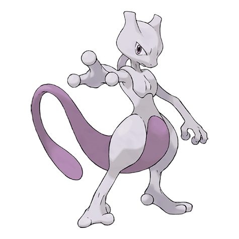

Назад
Мьюту

Мьюту — легендарный Покемон 1 поколения под номером 150 в Покедекс. Обитает он в регионе Канто и относится к Психическому типу. Мьюту не имеет постоянной стадии эволюции. Мьюту — Покемон, созданный путём генетических манипуляций. Учёные, создавшие тело этого Покемона, не смогли наделить Мьюту состраданием.
Тип:
Психический
Эволюция
# 150 Мьюту